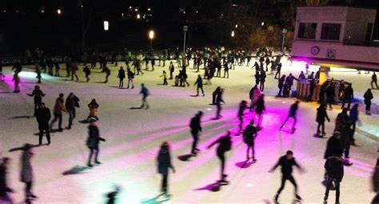
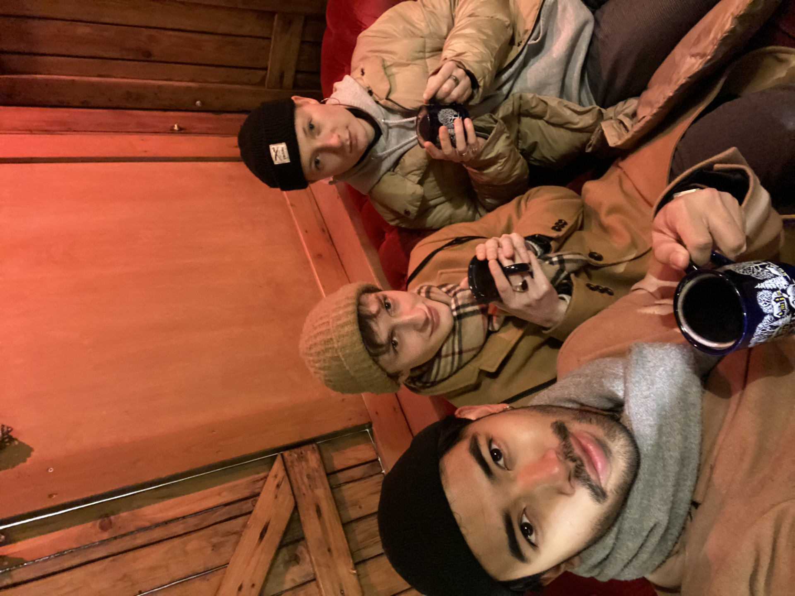
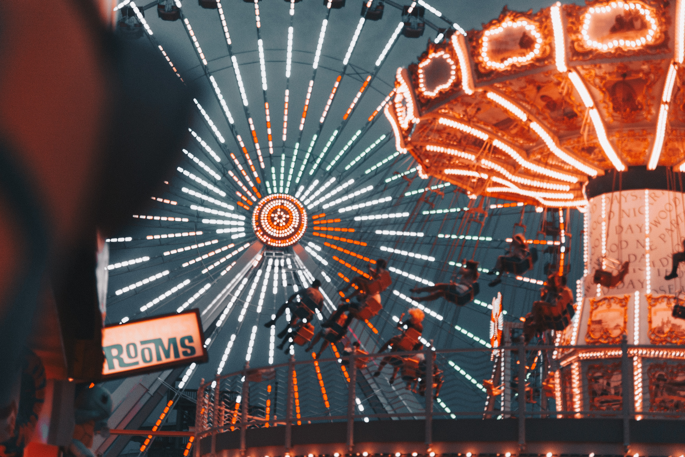
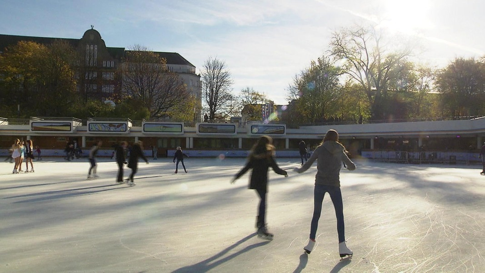

Moin, Hamburg!
Where Tradition Meets Trend
Things to do in Hamburg in winter

Hamburger Winter Dom

Weihnachtsmarkt

Schlittschuhlaufen
Your guide to the Hanseatic Experience

Meet Rafael, a seasoned resident of Hamburg who has called this vibrant city home for nearly five enriching years. Passionate about exploring every nook and cranny, Rafael has made it his mission to unravel the hidden gems and cultural treasures that Hamburg has to offer.
In his free time, you'll find Rafael meandering through the historic streets, strolling along the scenic banks of the Elbe River, and immersing himself in the rich maritime heritage that defines this northern German metropolis.
As winter blankets the city in a cozy ambiance, Rafael's enthusiasm for Hamburg doesn't wane. In fact, he sees the colder months as an opportunity to showcase the city's unique charm. With a warm cup of Glühwein in hand, he navigates through the festive Christmas markets that adorn the city, sharing tales of holiday traditions and local delicacies.
Hamburger Winter Dom

Experience the thrill of winter at the Hamburg Winter Dom, a dazzling carnival that transforms the city into a playground of excitement. Against the backdrop of Hamburg's crisp winter sky, the Winter Dom unfolds at Heiligengeistfeld, inviting you to a spectacle of lights, laughter, and heart-pounding rides. From the exhilarating spins of the Ferris wheel to the whimsical charm of carousel melodies, every corner of the Dom is alive with the infectious energy of the season. Savor the aroma of festive treats, explore the vibrant stalls offering everything from handmade crafts to delicious street food, and feel the exhilaration of the season's festivities. With its dynamic atmosphere and joyous ambiance, the Winter Dom in Hamburg is not just a carnival; it's a radiant celebration that transforms the chill of winter into a spirited carnival of memories and merriment.
Weihnachtsmarkt

Step into the enchanting embrace of holiday magic at the Hamburger Rathaus in Germany, where the air is infused with the festive spirit of the season. Nestled in the heart of Hamburg, this iconic Weihnachtsmarkt unfolds like a storybook beneath the majestic backdrop of the Rathaus. Wander through a wonderland of twinkling lights, where artisanal treasures and delectable treats beckon from festively adorned stalls. Sip on steaming mugs of spiced Glühwein, delight in the harmonious tunes of live music, and embrace the timeless traditions that make this Christmas market a radiant jewel in the city's winter crown. From handcrafted ornaments to the aroma of roasted chestnuts, every corner resonates with the warmth of holiday cheer, inviting you to share in the joy of the season at this quintessentially German celebration.
Schlittschuhlaufen

Embark on a magical journey across the glistening ice at the EisArena in Hamburg, Germany, where the spirit of winter comes alive with every glide. Nestled in the heart of the city, this enchanting ice-skating experience offers a picturesque backdrop of city lights and frost-kissed air. Whether you're a seasoned skater or a first-time visitor, the EisArena welcomes all to twirl and pirouette on the smooth ice surface. The festive atmosphere, accompanied by the joyous laughter of friends and families, makes this icy haven a timeless destination. With the Hamburg skyline as your backdrop, create cherished memories at the EisArena, where the art of Schlittschuhlaufen becomes a dance, and the chill of winter transforms into a heartwarming symphony of winter wonder.